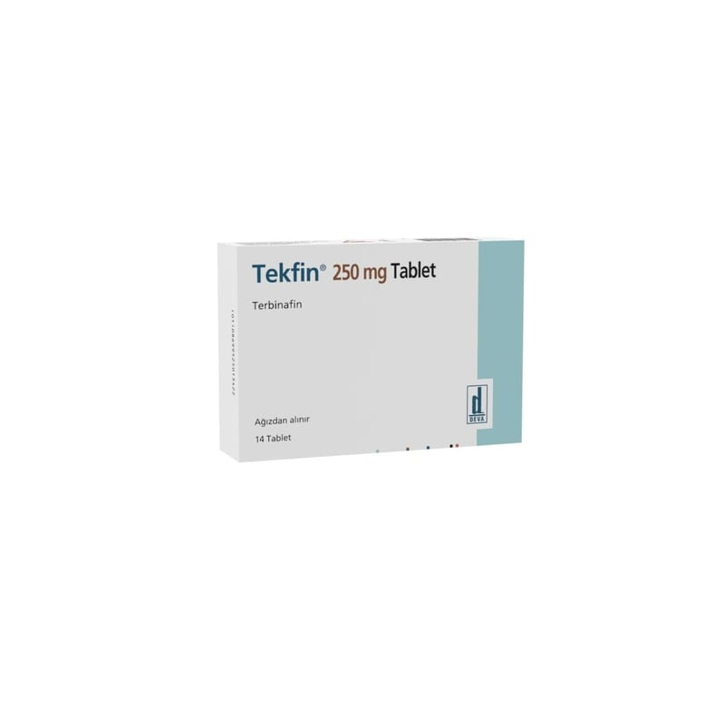

Tekfin 250 mg Tablet, 28 Adet

Ne için kullanılır
KT · Bölüm 1TEKFİN, 14 ve 28 adet tablet içeren blister ambalajlarda takdim edilmektedir.
TEKFİN, antifungal ajanlar olarak adlandırılan bir ilaç grubuna ait etkin madde terbinafin hidroklorür içermektedir.
TEKFİN, el ve ayak tırnaklarındaki mantar enfeksiyonlarının ayrıca derideki maya enfeksiyonlarının, kafa derisi ile saçtaki, kasıklardaki ve diğer vücut bölgelerindeki ve ayaklardaki tinea (Mantar) (Atlet ayağı) enfeksiyonlarının tedavisinde de kullanılır.
Ağız yolu ile alındığında, terbinafin enfeksiyon yerinde mantarları öldürecek ya da üremelerini durduracak kadar yüksek düzeylere ula şır.